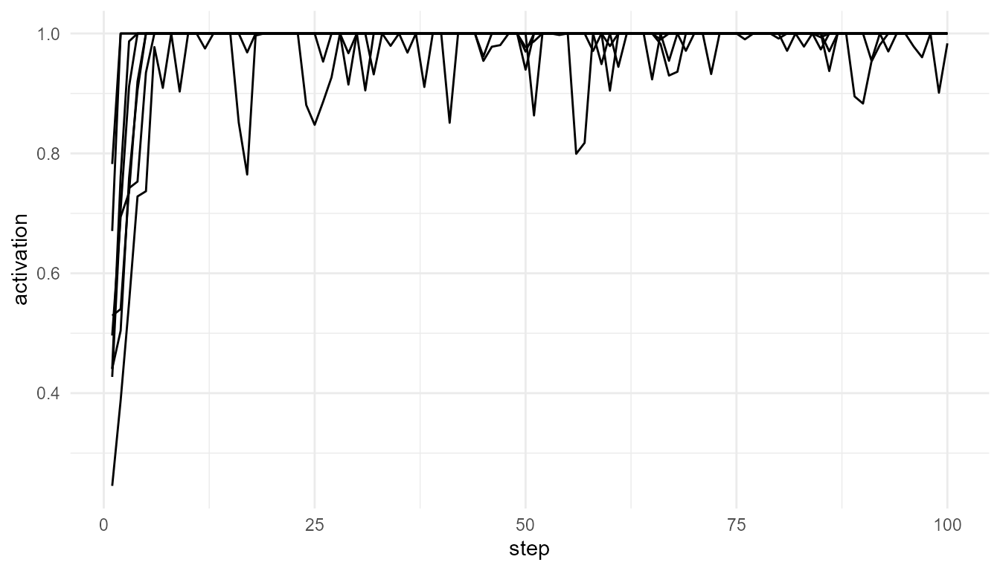

Purpose
This article explains the theoretical background behind
simulate_global_workspace(). Global Workspace Theory,
originally developed by Baars, describes consciousness as a form of
system-wide availability: information becomes conscious when it is made
accessible to a broad set of specialized cognitive systems (Baars 1988, 2002).
In this framework, consciousness is not treated as a separate substance or as a mysterious inner object. Instead, it is understood functionally: conscious information is information that can be used by multiple systems, including memory, reasoning, report, planning, and action.
The goal of this article is to explain how that theoretical idea is translated into a simplified educational simulation.
The core idea of Global Workspace Theory
Global Workspace Theory begins from the observation that cognition appears to involve many specialized processes operating in parallel. Visual processing, language, memory, emotion, motor planning, and attention can all be treated as partially specialized systems. Most of their activity does not become conscious.
According to the theory, consciousness occurs when some information becomes globally available across this wider system. A stimulus, thought, or representation may begin as local processing, but if it becomes sufficiently strong, stable, or relevant, it may enter a global workspace.
Once information enters this workspace, it can influence many other processes. It may become reportable, remembered, used in decision-making, or integrated into ongoing planning.
In simplified terms, the theory contains three major stages:
- Local processing: many specialized processes operate in parallel.
- Competition for access: signals compete for entry into the global workspace.
- Global broadcast: the selected signal becomes widely available to other systems.
This architecture is often compared to a theatre. Many activities happen backstage, but only selected information appears “on stage” and becomes available to the wider audience of cognitive systems (Baars 1988).
From cognitive theory to neuroscience
Later neuroscientific versions of the theory, especially the Global Neuronal Workspace framework, connect global access to large-scale neural activity (Dehaene and Naccache 2001; Dehaene and Changeux 2011). In this view, conscious access is associated with the stabilization and amplification of information across distributed brain networks.
A key concept in this literature is ignition. Ignition refers to a transition in which a signal moves from weak or local processing to a more stable, widespread, and reportable state. This transition is often described as non-linear: small increases in stimulus strength or attention may produce a sudden shift in access.
In consciousnessModelR, ignition is represented in
simplified form by the ignition_threshold argument. A
process may have activation, but it is only treated as globally
available when it crosses this threshold.
Relation to the package
The function simulate_global_workspace() represents the
logic of Global Workspace Theory using a small set of competing
processes.
Each process has an activation value. At each time step, the model identifies the process with the highest activation. If that process also exceeds the ignition threshold, the signal is treated as globally broadcast.
This gives the model three important components:
| Theoretical concept | Package representation |
|---|---|
| Local processors | Competing simulated processes |
| Signal strength | Activation values |
| Competition | Selection of the highest-activation process |
| Ignition | Crossing the ignition_threshold
|
| Global access | The broadcast output |
| Conscious-access-like event | A process winning competition and crossing threshold |
This is not a neural model. It is a conceptual model that captures the logic of competition, selection, ignition, and broadcast.
Basic simulation
The following example simulates eight competing processes over 100 time steps.
gw <- simulate_global_workspace(
n_processes = 8,
steps = 100,
noise = 0.10,
ignition_threshold = 0.75,
seed = 10
)
head(gw)
#> step process activation winner is_winner broadcast ignited
#> 1 1 P1 0.4403523 P4 FALSE 0.0000000 TRUE
#> 2 1 P2 0.4271607 P4 FALSE 0.0000000 TRUE
#> 3 1 P3 0.6705875 P4 FALSE 0.0000000 TRUE
#> 4 1 P4 0.7822774 P4 TRUE 0.7822774 TRUE
#> 5 1 P5 0.2454197 P4 FALSE 0.0000000 TRUE
#> 6 1 P6 0.5293545 P4 FALSE 0.0000000 TRUE
plot_consciousness_sim(
gw,
x = "step",
y = "activation",
group = "process"
)
Inspecting ignition and competition
The ignited column indicates whether the winning process
crossed the ignition threshold at each time step.
table(gw$ignited)
#>
#> TRUE
#> 800The winner column shows which process had the highest
activation at each time step.
table(gw$winner)
#>
#> P1 P3 P4
#> 776 16 8These two outputs should be interpreted together. A process can win competition without igniting. In theoretical terms, this means a signal may be locally dominant without becoming globally available.
Conceptual interpretation
The output illustrates a central distinction in Global Workspace Theory: local activation is not the same as conscious access.
A process may be active. It may even be stronger than other competing processes. However, in this simplified model, global availability requires something more: the process must both win the competition and cross the ignition threshold.
This distinction is important because Global Workspace Theory is not simply a theory of activation. It is a theory of access. Consciousness, in this model, depends on whether information becomes available to a wider system.
Threshold experiment
The ignition threshold is one of the most important parameters in the model. It represents how difficult it is for a signal to become globally available.
low_threshold <- simulate_global_workspace(
ignition_threshold = 0.50,
seed = 10
)
high_threshold <- simulate_global_workspace(
ignition_threshold = 0.90,
seed = 10
)
table(low_threshold$ignited)
#>
#> TRUE
#> 800
table(high_threshold$ignited)
#>
#> FALSE TRUE
#> 8 792Interpretation of the threshold experiment
A lower threshold makes global access easier. More signals are classified as ignited. A higher threshold makes global access more selective. Fewer signals cross the boundary into broadcast.
This experiment illustrates how theoretical assumptions affect model behavior. If conscious access is assumed to require only modest activation, then access-like events become common. If conscious access requires strong, stable activation, then access-like events become rare.
The threshold therefore has both a computational and conceptual meaning. It is not merely a number in the code; it represents an assumption about the conditions under which information becomes globally available.
Noise, stability, and competition
The noise argument represents random fluctuation in
process activation. In theoretical terms, this can be understood as
variability in input, uncertainty, or background processing.
low_noise <- simulate_global_workspace(
noise = 0.02,
ignition_threshold = 0.75,
seed = 10
)
high_noise <- simulate_global_workspace(
noise = 0.25,
ignition_threshold = 0.75,
seed = 10
)
table(low_noise$winner)
#>
#> P1 P4
#> 784 16
table(high_noise$winner)
#>
#> P1 P2 P3 P4
#> 680 80 24 16Low noise tends to produce more stable competition. High noise can make the winning process less predictable. This is useful for teaching because it shows that access is shaped not only by signal strength but also by variability in the system.
What the model captures
The simulation captures several theoretical features of global workspace accounts:
- many processes operate in parallel;
- only some information becomes globally available;
- competition influences access;
- threshold crossing represents ignition;
- broadcast represents system-wide availability.
These features make the model useful for teaching the functional logic of Global Workspace Theory.
What the model does not capture
The model is intentionally simplified. It does not include:
- detailed brain anatomy;
- sensory systems;
- working memory architecture;
- recurrent cortical processing;
- long-range neural connectivity;
- report behavior;
- subjective experience.
It also does not prove that global broadcast is sufficient for consciousness. Philosophically, one may still ask whether access, reportability, or broadcast fully explains phenomenal experience. This is one reason Global Workspace Theory is often discussed alongside other approaches, including higher-order theories, recurrent processing theories, and Integrated Information Theory.
Relation to other functions
simulate_global_workspace() works closely with other
functions in the package.
| Related function | Relationship to Global Workspace Theory |
|---|---|
attention_competition_model() |
Models how signals may be prioritized before workspace access |
broadcast_network() |
Models how selected information spreads after access |
consciousness_threshold() |
Applies threshold logic to activation values |
plot_consciousness_sim() |
Visualizes activation, competition, and access-like patterns |
Together, these functions separate several concepts that are often combined in theory: attention, competition, ignition, broadcast, and access.
Educational use
This simulation is useful in teaching because it allows students to manipulate theoretical assumptions. For example, students can ask:
- What happens when the ignition threshold is low or high?
- Does noise make conscious-access-like events less stable?
- Does one process dominate the workspace?
- How often does winning competition lead to broadcast?
- Is global availability enough to explain consciousness?
These questions help students move from passive reading to active theoretical exploration.
Key takeaway
Global Workspace Theory explains consciousness in terms of access and availability. In this view, information becomes conscious when it is selected from among competing processes and made available to a wider cognitive system.
simulate_global_workspace() represents this idea as a
simplified educational model. It does not simulate subjective
experience, but it does help clarify the theoretical structure of
competition, ignition, and broadcast.